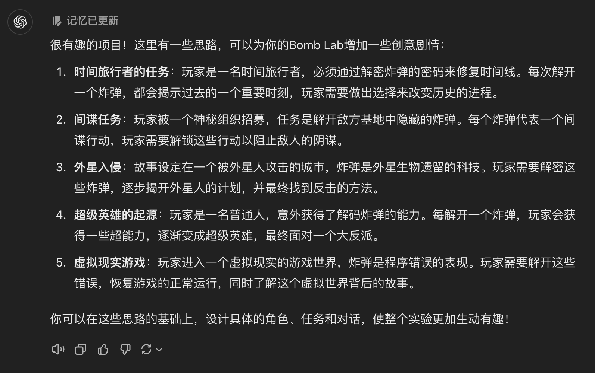

BombLab
Deadline：2024-10-30 23:59:59
一、实验简介
CSAPP 第三章配套实验。
本学期，我们对 CSAPP 的经典 BombLab 进行了全面再次升级（包括剧情）。你将综合运用 x86 汇编语言 / Linux / gdb / 数据结构 等的相关知识，解决一系列挑战，提升逆向工程技能。
本次 Lab 由两个部分组成：
- 一个互动式 gdb 教程：gdb-tutor
- 一个包含若干个关卡的二进制炸弹：bomb++
你的目标是拆除炸弹，无伤通过 bomb++ 的所有关卡。
二、实验剧情
前排提醒：剧情内容仅为增加实验趣味性所设，对解题本身毫无影响！（也就是说如果不愿意看，可以直接在
config.txt中将story_mode设定为 false）
2034 年，人工智能（AI）已深入渗透人类生活的每个角落，所有设备都由中央智能实体（CIE）所控制。一天，作为全球顶尖科学家之一的你，收到来自 CIE 的紧急消息：一个由古早设计者植入的“炸弹”——隐藏在系统核心代码中的病毒——已经在所有 AI 系统中传播，预计将在 14 天后引爆，可能引发全球性的混乱。
你的使命是回到 2024 年，在第一个带病毒的 AI 设备出现的时刻，从根源解决这枚“炸弹”。你必须深入“炸弹”的汇编代码，寻找若干口令来关闭“炸弹”。在这一过程中，你将不断发现被隐藏的真相……
三、实验内容
互动式 gdb 教程 gdb-tutor
本部分不占分，也不要求必须完成。
在挑战 BombLab 时，gdb 是一个非常有用的工具。为了降低本 Lab 的上手难度，并帮助大家掌握 gdb，认识这一强大的工具，我们编写了这个互动式的 gdb 教程。
使用方法：直接执行 ./gdb-tutor，教程源码见
gdb-tutor.c。
二进制炸弹 bomb++
这是一个包含若干关卡的可执行文件。只有你输入满足条件的关卡口令时，才能通过该关卡，到达下一个关卡。如果口令错误，炸弹就会爆炸！（程序会打印爆炸信息并立刻退出）
你的目标是找到所有关卡的正确口令，让炸弹成功解除。炸弹制造者不小心给出了
main.cpp ，其中包含了 bomb++
的主要流程，你可以参考这个源文件了解炸弹的大致逻辑。
如果炸弹爆炸，它将会输出 BOOM!!!
并退出。通过每一关后都会有通关提示（并输出一段剧情）；在通关后，它将会输出
Cool! your skill on Reverse Engineering is great.
（和普通结局剧情）；而通关真结局后，它将会输出
You are really a Master of Reverse Engineering!
（与真结局剧情）。（详见 main.cpp）
炸弹会读取
fail.txt并在爆炸时打印其内容，如果你想要很酷炫的爆炸，可以自行修改fail.txt或直接将其删去。本次实验附赠一只可爱猫猫～
实验各个关卡涉及的知识大致如下：
- 函数调用
- 循环
- 分支
- 递归
- 面向对象
- 单调栈
Secret. ████
请注意，Secret 的解锁条件在第三关中进行了提示，或许你能在
main.cpp 的某个函数中发现一些违和之处……
关于 config.txt
本次 BombLab 采用了个性化答案制度，即：每个人的答案会依据自己的学号发生变化。请务必填写自己的学号！
这一操作位于
phase_0中，这个函数中的所有内容都和 bomb++ 的内容无关！不需要阅读！不需要阅读！！不需要阅读！！！（其中包括了各种EVP开头的函数）另外，助教会根据每个人的学号来判断答案，如果漏填学号或者填错学号导致的错误，助教一概不负责！
为了便利，本次 BombLab 提供了跳题选项！在
config.txt中设置test_phase，bomb++ 只会来测试相应的关卡。例如：第 3 关卡关，你可以将
test_pahse设置为1, 2, 4, 5, 6, 然后运行./bomb即可跳过3。请确保在提交时，
config.txt中，test_phase被设置为1, 2, 3, 4, 5, 6，以便助教们直接测试你的答案。关于剧情模式：
两位助教讨论了一整晚想出来的剧情剧情模式是为了增加做实验过程中的乐趣所设，我们真心希望大家写 Lab 时能乐在其中！当然，如果你觉得剧情模式的大段输出影响到了你正常解题，可以在config.txt中将story_mode设置为 false。请确保在提交时，
config.txt中，story_mode被设置为false。
四、实验步骤
- 完整阅读本实验文档、从 github classroom 上拉取实验仓库
- 跟随 gdb-tutor 学习 gdb 的基础使用方法
- 按需求配置
config.txt，包括需要测试的关卡、是否选择开启剧情模式、学号 - 使用静态分析与动态分析方法分析 bomb++，尽力找出正确的口令
- 编写实验报告，并在 github classroom 上提交
五、提交事项
内容要求
在项目的根目录下，需要有实验报告
lab2_<学号>.pdf（要求转为 pdf
格式）以及正确口令
password.txt。注意，password.txt
需要满足可以用重定向秒杀 bomb++
的要求（我们会在后面介绍什么是重定向），我们会用这个来判断你通过了几关。
你的实验报告应包含以下内容：
- 姓名和学号
- 每个关卡的推演过程（重点），如你推测的函数的功能
- 拆弹成功的截图（请关闭剧情模式进行截图）
- 如果有，请列出引用的内容以及参考的资料
- 意见+建议（可选）
关于实验报告
实验报告是用来判断你是否 独立思考 来解决本次 Lab 的。
我们不希望看到冗长或表意混乱的报告，请一定不要把报告写成论文 QaQ
提交方法
在终端运行以下指令：
1 | 注：需要在仓库的根目录进行操作 |
评分
| 项目 | 分值 |
|---|---|
| 提交格式正确 | 5% |
| 通过正常关卡 6*13% | 78% |
| 通过隐藏关卡 | 7% |
| 实验报告 | 10% |
另：抄袭倒扣分！！勿谓言之不预。
反卷斗士の承诺
实验过程非抄袭的同学，实验报告部分赋满分。一旦发现抄袭，则零分处理。
请大家不要迟交，迟交扣分：
- 迟交 1 天：-10%
- 迟交 2 天：-20%
- 迟交 3 天：-50%
- 迟交 4 天：-70%
- 迟交 5 天及以上：-100%
六、实验指导
本题本质上是一道逆向工程题，需要你在没有源代码的情况下复原程序编写者的意图与程序的逻辑。你可能会好奇，我们为什么要学习逆向工程、学习汇编：作为科班 CS 学生，你需要知道自己写出来的程序到底会变成什么样子，到底如何运行，这样你才能知道如何写出更好的程序——正是这些底层的细节将科班程序员和培训班程序员区分开来。这个 Lab 将会帮助你搞清楚机器码 / 汇编语言具体而言如何运作。
除此以外，这个 Lab 还会带你入门逆向工程。逆向工程作为信息安全的一个研究领域，有着许多有趣的应用领域——注册机、软件破解、游戏安全（如修改器、外挂）……除了这些看起来很恶意的应用场景以外，逆向工程一个非常重要的作用就是帮助白帽黑客们找到程序的漏洞，发掘程序的安全问题。不过，最纯粹的逆向工程热爱者，往往是出于自己的好奇心来逆向闭源的软件——这玩意到底怎么实现的？
如果你对逆向工程感兴趣，可以试着从 CTF（Capture The Flag） 竞赛开始。逆向工程是 CTF 竞赛的一个主要领域，比赛中出题人会用各种语言、工具编写赛题，试图隐藏程序的逻辑。参赛者需要使用各种工具、结合各种资料来还原程序逻辑。在比赛与练习中，你会接触到各种软件开发技术（如 python、rust、golang、android……）、各种编码和密码学算法（如 Base64、TEA、RC4……），了解其底层的实现原理。我们学校也有相应的社团 / CTF 战队——信息网络安全协会/六星战队，大家可以了解一下哦~
在逆向工程中，分析方法可以大致归类为两类：动态分析与静态分析。简单来说，动态分析就是运行程序、观察其行为；静态分析就是借助可执行文件中的信息与数据（如机器码）还原程序逻辑。在本节中，我们会分别介绍动态分析、静态分析的方法与工具，然后再介绍一些别的小工具。
动态分析
最简单的动态分析就是直接运行程序。你可以试试引爆炸弹先。
正经的动态分析就是使用 gdb（全称为 GNU
Debugger）等调试工具进行动态调试。动态调试的坏处是可能会一不小心让程序“跑飞了”，错过你想要观察的代码；而好处就是你可以直观地看到程序运行时，各种数据的实际值。
至于如何使用，请参考 gdb-tutor。
你可以去网上找一个 gdb
cheetsheet（小抄），方便你查找想用的指令。我们也给出一个挺好的英文教程：Tudor‘s
gdb crash course。或者可以直接在 Linux 环境下
man gdb（man 为 manual
的缩写，是用来查看系统命令和程序的手册页的命令）查看 gdb
的完整文档。
以下为一些 gdb 的常用指令：
| 命令（缩写） | 作用 | 示例 |
|---|---|---|
| tab | 命令或关键字补全 | |
| run (r) | 运行程序 | r |
| quit (q) | 退出 gdb | q |
| break (b) | 打断点，可指定函数名或具体地址 | b *0x400540 |
| continue (c) | 继续运行程序，一般是从断点处开始 | c |
| print (p) | 打印数据，可以指定格式，也可以指定寄存器、内存、变量等 | p /x *($rsp+8) |
| display (disp) | 指定的内容和print一样，不过可以重复展示 | display /5i $pc |
| info (i) | 获取信息，可指定寄存器、函数、断点信息等 | i r{egister} pc |
| delete | 删除gdb指定的内容，可指定断点等（默认是断点） | d {break} 1 |
| stepi (si) | 执行一条指令，后可跟数字表示执行多条 | si 10 |
| examine (x) | 代码检查，后跟具体地址，可以指定输出的方式和格式 | x /10i $pc |
| call | 在gdb中进行函数调用（很神奇的功能） | call printf("") |
| backtrace (bt) | 查看调用栈，即函数调用的情况 | bt |
静态分析
反汇编
我们回顾一下C程序的编译过程：源代码 -> 汇编代码 -> 机器码，中间两步分别称为编译与汇编。
在源代码到汇编代码的过程中，编译器作了许多的优化、也删去了很多源代码中的信息，比如局部变量名等等……而汇编代码和机器码则是几乎等价的，汇编语言是机器码的助记符。
因此，有工具能帮我们将可执行文件中的机器码转化为汇编代码也就不足为奇了，这种工具被称为反汇编器。至于汇编代码到源代码，这种工具也存在，但由于本次实验旨在帮助大家熟悉汇编代码，因此在本次实验中我们不会介绍它们。我们这里介绍一个非常经典且常用的反汇编器——objdump。
我们在命令行中输入 objdump -d ./bomb > bomb.S
就可以获得反汇编文件 bomb.S。
objdump --help 会打印出 objdump
的所有用法，并且会给出精简的解释。man objdump
会打印出详尽的解释。
关于 objdump
你可以尝试在
objdump后加上-D和/或-x和/或-C，就像上面出现的-d一样。你可以通过搜索或读文档的方式了解这会导致什么后果；TA 相信这几个参数会对你的实验有很大帮助！
X86 / AMD64 汇编语言的格式
在 CSAPP 课本上，有一个拓展框介绍了两种汇编语言的格式—— AT&T 以及 Intel。
他们最显著的区别有两个（当然还有别的区别，见课本）：
- 两者的源操作数和目的操作数顺序相反
- AT&T 中寄存器需要加上
%前缀，而 Intel 语法则不用。本课程上课教学时使用的语法是 AT&T，这也是 objdump 默认使用的语法。但我们同样推荐你试试 Intel 语法，因为这是安全研究人员更常用的一种语法。想让 objdump 输出语法变为 Intel，只需要给 objdump 添加参数
-M intel。
阅读汇编
在拿到汇编代码文件后，我们就需要通过分析它来理解程序的逻辑。如果是一个简短的函数，或许汇编也就几十行；但你很有可能会遇到百来行的函数。如何应对这种复杂的代码？
我们介绍一种理解汇编代码的方法，叫做 CFG（Control Flow Graph，控制流图）。显然，汇编代码中没有 if-else / for loop / while loop 这样的结构，而只有各种 jump 和 conditional jump。很容易想到，我们可以把各种 jump 指令把它们的目标用一个箭头连起来，来让代码变得稍微好看懂一点。不过，我们还可以做得更加好一些：

这是一个伪代码的例子，我们同样可以将这个方法运用到汇编语言中。构造 CFG 的基础方法很简单：我们只需要把不含跳转代码当作一个 Block，然后把 Block 们连接起来即可。你可以在草稿纸上使用这个方法，将函数的跳转逻辑理清楚。不要小看了 CFG 的作用，亲自试试吧，或许你会从此觉得读汇编语言也不过如此。
另外一种推荐的技巧是……将汇编代码打印出来。没错，虽然我知道手写代码一定是痛苦的体验，但在纸上阅读汇编语言代码确实是一种推荐的方法。这是因为，汇编语言的阅读可能需要大量的标注，在纸上标记会方便很多。不过也请注意，bomb++ 的汇编代码很长，包含了许多不会执行或与实验无关的函数。你可以只在遇到应付不了的关卡时才选择把看不懂的那些函数打印出来。
下面给出一些常见结构的汇编代码：
条件判断
C 语言： 1
if (array == 0) return;
汇编语言： 1
2
3endbr64
test %rdi,%rdi # 让函数第一个参数和自己作与运算
je 11cb <for_sum(int*, int)+0x22> # 若结果为 0，则跳转；相当于判断参数是否为 0，为 0 则跳转
循环结构
C 语言： 1
2s = 0
for (int i = 0; i < size; ++i) s += array[i];
汇编语言： 1
2
3
4
5
6
7mov $0x0,%eax # 初始化自增条件变量 i = 0
mov $0x0,%edx # 初始化总和 s = 0
cmp %esi,%eax # 判断条件变量是否满足条件 i < size ?
jge 11d0 <for_sum(int*, int)+0x27> # 大于或等于则跳出循环
add (%rdi,%eax,4),%edx # 用 i 进行数组索引 base + i*4 => array[i]; s += array[i]
add $0x1,%eax # 自增 i++
jmp 11bc <for_sum(int*, int)+0x13> # 回到比较的地方
switch case 结构
- 打表：如果 case 的不同条件比较紧凑规律（比如 0、1、2、3......），则将 case 的条件作为索引、对应的地址（可能是地址偏移量）作为值，创建一个表格存放在内存中。
| case | addr |
|---|---|
| 0 | 0x1000 |
| 1 | 0x1004 |
| 2 | 0x1008 |
| 3 | 0x1010 |
- 类似 if else 嵌套：如果 case 比较稀疏，则通过采用连续的比较和条件跳转指令
1 | cmp $0x61,%dil |
递归
函数内部调用了函数本身，需要注意对 callee-save 寄存器的保存和使用
C 语言： 1
2
3
4int recursion(int x){ // 求斐波那契数
if (x < 2) return x;
return recursion(x-1) + recursion(x-2);
}
汇编语言： 1
2
3
4
5
6
7
8
9
10
11
12000000000000122c <recursion(int)>:
push %rbp # 保存 rbp
push %rbx # 保存 ebx
mov %edi,%ebx # 保存第一个参数 x，因为 x 和 rdi 寄存器后续函数都要使用，因此将 x 保存在新的寄存器中（这里是 ebx），防止后续的函数将 rdi 中存放的 x 覆盖掉，而 ebx 因为是 callee-save，因此提前保存了它
cmp $0x1,%edi
jle 1258 <recursion(int)+0x2c> # 小于等于 1 则跳转，相当于 x < 2
lea -0x1(%rdi),%edi # x-1
callq 122c <recursion(int)> # recursion(x-1)
mov %eax,%ebp # 将得到的返回值放在 rbp 中，因为 rbp 是 callee-save，要提前保存
lea -0x2(%rbx),%edi # x-2，这里也用到了 x，因此需要提前保存x
callq 122c <recursion(int)>
...
struct
内部变量按顺序排列，需要对齐
1 | typedef struct { |
C++虚函数
类的非静态函数调用时，默认第一个参数是指向该对象的指针 this
每一个类有唯一的一个虚函数表（vtable，其中只包含虚函数的指针），不是每个对象都有一个 vtable，恰恰是每个同一个类的对象都有一个指针，这个指针指向该类的 vtable（当然，前提是这个类包含虚函数）。那么，每个对象只额外增加了一个指针的大小。
1 | mov $0x8,%edi |
其他实验帮助
重定向与管道
上过 C 语言和 C++ 的大家应该知道，命令行程序有三个默认打开的“流”，分别是 stdin，stdout 以及 stderr。在我们运行命令行程序时，标准输入就是我们敲进去的东西，而程序打印东西到 stdout 或者 stderr，其实就是打印到命令行上。
在学习 C 或 C++ 的文件操作的时候，会发现一个很巧的事情——文件读写用到的 API，和标准输入输出用的那些 API 其实都差不多，这是因为文件和标准输入输出本来就是一样的。在 Linux 系统中，一切皆文件。不仅传统意义上的文本文件、多媒体文件等普通文件是文件，套接字（网络接口）、键盘鼠标设备等等都是文件，可以用统一的一套文件 API 进行处理。
这种设计不仅带来了极大的统一性，也带来了极大的便捷性。本节介绍的 iostream 重定向和 pipes 管道就与这种设计有关。
既然 stdin 和 stdout
也是文件流，那么我们当然可以把他们重定向到一个普通文件！我们让一个文件被定向到一个程序的标准输入，或者让一个程序的标准输出定向到一个文件当中。前者我们使用
< file，后者我们使用
> file，如下所示：
1 | $ echo hello > hello.txt # 把stdout重定向到hello.txt中 |
如果你找到了所有的正确口令，那么把它们写到一个文本文件
password.txt 中，那么使用
./bomb < password.txt 就可以直接通过所有的关卡。
除此以外，还有更加便利的 管道
操作，可以帮助我们将两个程序的输入和输出相连接，也就是构造一条虚拟的管道。这种神奇的操作是通过
| 来完成的：
1 | $ cat 1.txt # 假设我们有这么一个文件 |
利用这两种操作，我们可以方便地处理BombLab的输入。我们知道
cat
是打开文件，也知道标准输入同样也是一个文件，因此我们可以用
cat - 打开标准输入文件，这时候 cat
就相当于一个 echo，可以复读我们说的话：
1 | $ cat - |
除此以外，cat 还可以打开多个文件，如下所示：
1 | $ cat 1.txt |
如果你在做 BombLab
时，已经找到了前面某些阶段的口令，不想在后续步骤中再一遍遍重新输入它们的话，就可以将已知的口令写入一个文本文件中，然后用
cat
打开那个文本文件以及标准输入，然后利用管道机制将这两个文件的内容导向
bomb++ 的输入：
1 | $ cat password.txt - | ./bomb |
使用这种操作时注意，由于 bomb++ 每一阶段都会重新读取一行，所以文件结尾多出的换行符会导致 bomb++ 下一阶段读到一个寂寞，从而导致炸弹爆炸。因此，你的口令文件的末尾，应该有且仅有一个空行。
文件拓展名
熟悉 Windows 的各位同学一定对诸如
.exe.docx.xls.png.jpeg等拓展名见惯不惯了，Windows 系统会通过文件名中的这些后缀来判断如何打开这个程序。不过在使用 Linux 时，通常不需要你为文件加上拓展名，这是因为 Linux 系统往往通过文件头中的魔数来区分文件类型。因此，我们在这里为文本文件标上
.txt后缀类似于注释一样，是为了让大家看得更清楚一些。
“超纲”的汇编指令
大家在实验过程中，或许会遇到一些课上没有讲过的汇编指令，我们在这里介绍一下其中一个。
endbr64：一种用于防御 ROP（Return Oriented
Programming）攻击的机制 —— CET（Control-flow
Enforcement）的一部分，但大多的 CPU
现在还没有实装，因此它们执行到这条指令时会直接略过。本次实验并不涉及相关的内容，你也可以直接略过。如果对二进制漏洞攻防感兴趣，大家也可以关注信息网络安全协会的相关活动。
如果遇到其他没见过的汇编指令，我们建议自己查询互联网。如果你有钻研的精神，欢迎你试着查询 Intel 的官方手册 英特尔® 64 位和 IA-32 架构开发人员手册（5000 行），真正理解这个指令的细节。在查询这种奇厚无比的手册时，请一定记得利用好目录以及搜索功能。
七、参考资料 & 推荐资料
- http://csapp.cs.cmu.edu/3e/labs.html 原版 Lab
- 本实验参考 22、23 年的实验开发
- 从汇编角度学习 C/C++ - 看雪
八、实验彩蛋
- 2023ICS BombLab：
曾经可能会出现的剧情
